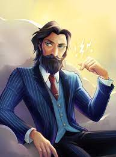
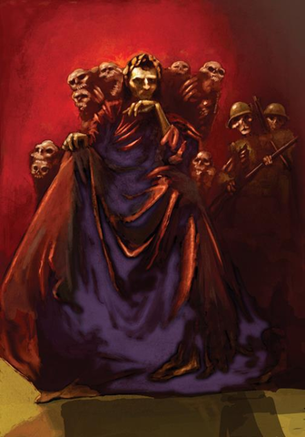

Main Gods of The Greek Myth
The Trio Brothers

Zeus: King Of the Gods
Zeus, also known as Jupiter, is one of the twelve Olympian gods and an antagonist from the book series Percy Jackson and The Olympians and Heroes of Olympus. Zeus/Jupiter is the king of Olympus, ruling over all of the Greek-Roman gods and their demigods. He is the father of Thalia Grace and Jason Grace.
Posidon: God Of The Sea
Poseidon is the Greek god of the sea, storms, earthquakes, droughts, floods and horses. He is the son of the Titans Kronos and Rhea, as well as one of the Big Three. His Roman counterpart is Neptune. He is also the patron god of Corinth and his cabin in Camp Half-Blood.

Hades: God Of the Dead
Hades is the king of the Underworld and the Greek God of the dead and riches. He is the eldest of the Big Three, the firstborn son of Kronos and Rhea, and the husband and uncle of Persephone. His Roman counterpart is Pluto.